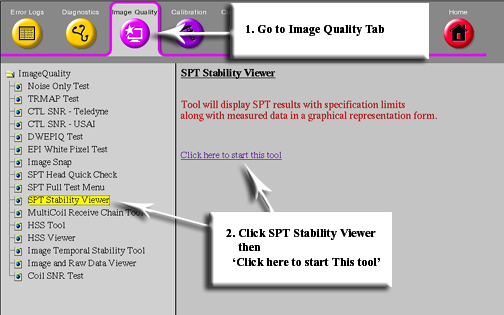
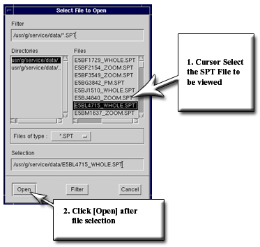
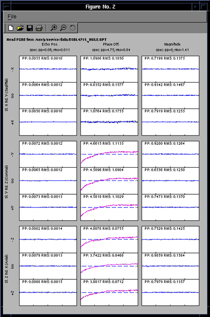

Proprietary to General Electric
Direction 5500113, Rev# 3
Discovery MR450 1.5T Service Methods
Module Version 2.0, Version Date 5/8/09
Proprietary to General Electric |
| Required Persons | Preliminary Reqs | Procedure | Finalization |
|---|---|---|---|
| 1 | Not Applicable | 30 mins | Not Applicable |
Starting SPT Stability Viewer
| Last Update | 09/27/2005 |
From Common Service Desktop (CSD) select Image quality, then SPT Stability viewer, (see Illustration 1).
Illustration 1: Starting SPT Stability Viewer

Select the SPT pass that you want to analyze, then select open, (see Illustration 2). The most recent SPT file is at the bottom of the list.
Illustration 2: Selecting File to View

If the selected SPT file has Stability results, then the viewer will display it. The plots for Head FSE, Head GRE, Body FSE, and Body GRE are displayed in separate windows.(see Illustration 3).
Illustration 3: SPT Output

No finalization steps.